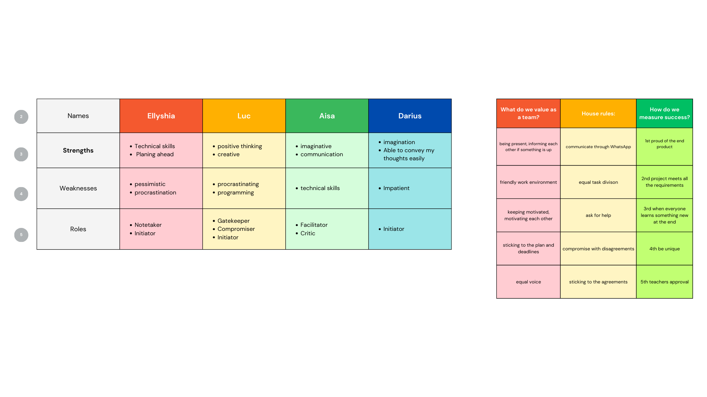

When working on my assignments, both individual and group, I make sure to always take into account the stakeholder of our project, which in this semester it's the teachers. I do this by regularly asking for feedback from the teachers, and when applicable, implement the feedback to the projects. Then for the group project, I also often come up with the initiative to ask for group feedbacks to the teachers, and also come up with the initiative of suggesting to the group members to discuss what we have to do as a group, and take notes in the team's workspace in Notion of what were discussed and what should be done. Documentations and useful resources of the group project are also included in the Notion workspace.
For the group project, me and my teammates also made a Team Charta before we start with all group works, to determine what values we want our group to have and keep throughout the group work.
Me and my teammates also did group retrospectives to evaluate our behaviors throughout the group work, then decide which behaviors we have to start doing or stop doing, and which behaviors we have to keep.
Reflection
I learned how to always be mindful about the importance of the involvement of the stakeholder in the project, to execute my role well and be initiative while working in a group, and how to align my behaviors during group projects with the values that we agreed on in the Team Charta. I also learned, through giving feedback to my teammates, how to address their behaviors that don't align with the values of our team.